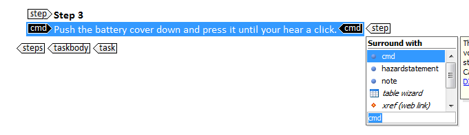

To wrap text
- Select the text that you want to wrap in element tags.
-
Do one of the following:
- Right-click the selected text and choose Refactoring > Surround with tags.
- Press Enter.
- Press Ctrl+E.
-
In the displayed list of elements, select the correct element and press Enter.
